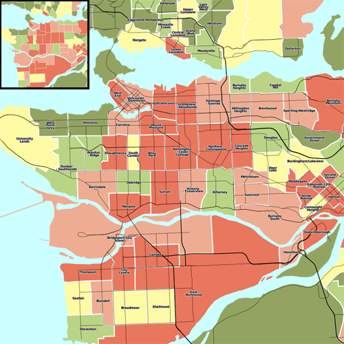

Scale and ppi¶
Scale and Scale denominators¶
There are two aspects that play a role when you want to make a digital map and determine what the scale is: the projection you use, and the resolution at which you display or print the map. Both will be explained here.
Scale¶
Map scale has traditionally been about how the real world translates into the paper world, so when we see a scale of 1:10,000, that would mean one inch or centimeter on the paper map is really 10,000 inches or centimeters in the real world. However, since every map is the result of a projection, and because projections are often not perfect, a real world map will always introduce some distortions. British Ordnance Survey maps which are labeled with a scale of 1:50,000 have a true scale that varies, depending on easting, between 1:49,980 and 1:50,025. This is quite small difference and unlikely to cause confusion.
For large maps, this difference will be even larger, for example, if we look at the world map below, it should be obvious that no scale can be given. On this map Africa looks the same size as Greenland, in reality it is 14 times as large. The pink circles indicate areas of equal size on the real world. Mapnik will still give a ‘scale’ for such a projection, but one should be aware that for these projections that cover a large area, such a number might not be very useful, or only be valid for a specific part of the map.

One can see a similar issue on Google Maps, if you follow this link, you'll see a map centered on France, with a scale marker indicating 100 mile and 200km, if you drag the map in small steps to Norway or to the equator (without changing the zoom level) you can see how these scale markers change in order to adjust for the deformation introduced by the projection Google uses.
Alternatively you may compare the scale markers of a googlemap at equator (LAT=0.0) vs. a googlemap in the northsea (LAT=70.0).
Let's look at some example code which makes a map for the same area of the earth (the Netherlands) using both the traditional Dutch projection (which is optimized for the Netherlands) and the projection Google uses and how this plays a part when you wish to determine the scale of the image.
#!/usr/bin/env python
from mapnik import *
Google = ('+proj=merc +a=6378137 +b=6378137 +lat_ts=0.0 +lon_0=0.0 '
'+x_0=0.0 +y_0=0 +k=1.0 +units=m +nadgrids=@null +no_defs +over')
Dutch = ('+proj=sterea +lat_0=52.15616055555555 +lon_0=5.38763888888889 '
'+k=0.9999079 +x_0=155000 +y_0=463000 +ellps=bessel '
'+towgs84=565.2369,50.0087,465.658,-0.406857330322398,0.3507322398,-1.8703473836068,4.0812 '
'+units=m +no_defs')
ll = Coord(3.33616615777, 50.6726082021)
ur = Coord(7.27393885318, 53.5524509099)
dutch_map = Map(1350, 1600, Dutch)
dutch_p = Projection(Dutch)
dutch_map.zoom_to_box(dutch_p.forward(Envelope(ll, ur)))
print 'Dutch projection: ', dutch_p.inverse(dutch_map.envelope())
print 'Scale of Dutch projection: ', dutch_map.scale()
google_map = Map(1350, 1600, Google)
google_p = Projection(Google)
google_map.zoom_to_box(google_p.forward(Envelope(ll, ur)))
print 'Google projection: ', google_p.inverse(google_map.envelope())
print 'Scale of Google projection: ', google_map.scale()
The output of this script is as follows:
Dutch projection: Envelope(3.33616615777,50.6726082021,7.27393885318,53.5524509099)
Scale of Dutch projection: 200.0
Google projection: Envelope(3.32579921056,50.6726082021,7.28430580039,53.5524509099)
Scale of Google projection: 326.414028061
So we see that both projections cover roughly the same physical area on Earth, the Google projection covers only a slightly larger area, and both maps are the same size in number of pixels, yet their scale values differ wildly! This might be counter intuitive at first, if you have paper maps in mind: two maps of the same size covering the same area, should have the same scale.
Mapnik's scale however, returns the number of ‘map units’ per pixel. Projections can use degrees or meters as their unit. In this case both projections use meters, and both projections project a lat/lon coordinate on a simple Cartesian x/y coordinate. Why the difference then? Because for the Google projection we're actually only looking at a tiny part of the whole world, and a quite northern part too. We have already mentioned that this map projection greatly distorts shapes towards the poles. And this what we see here. The Dutch projection is quite accurate (but only for the Netherlands), and the 200 here indicates that one pixel is 200x200 meters in the real world (so the whole map covers 270x320km (168x192mi), which is indeed the size of the Netherlands). The Google projection however exaggerates the size of the Netherlands. It is correct around the equator, and for maps there, one pixel on the map would indeed be 326m in the real world.
If you want to figure out a pixel <-> real world meter correspondence, you therefore always have to take into account how badly the projection distorts shapes at the area you're interested in. If you display a very large area, it might actually not be possible to give a sensible scale indicator.
Apart from the scale, there's also the scale denominator, which plays a further role if you print your maps.
Scale denominator¶

The above image illustrates how scale dependent rendering and resolution interact. Each map has the same extent and proportions. The large map was printed at 1000px by 1000px and the smaller inset at 250px250px, these were both reduced by 50% for display here. What you should notice is that resolution matters for scale. Each of these maps, made with Nik2Img, have different levels of detail, because they are at different scales, even though the extents are the same.
What determines the actual scale of the map when printed, is determined by an additional factor which is the number of pixels that make up an inch--Pixels per inch(PPI). Various digital screens have different pixel sizes and therefore PPI differs in ways that software often cannot be aware of. Mapnik calculates it's default at about 90.7 PPI, which originates from an assumed standard pixel size of 0.28 millimeters as defined by the OGC (Open Geospatial Consortium) SLD (Styled Layer Descriptor) Specification.
The value scale_denominator yields the map scale as given by the scale() method, divided by 0.00028. Note that this only an accurate description of the scale of your printed map if (a) you indeed print the map at 90 PPI and (b) if the scale() method is accurate for the area you are projecting (as explained in the previous section).
MinScaleDenominator and MaxScaleDenominator¶
As can be understood from the previous section: even if you project roughly the same part of the physical earth onto the same sized image, depending on the projection you use the scale of the map can change by a large amount. If you reuse a style file which was written with one projection (for example Google projection) in mind and you switch to another projection, you need to adjust these denominators in order to see the same amount of detail on your map. For the above Google -> Dutch switch, every denominator would need to be divided by (326/200) in order to get the same features on both maps.